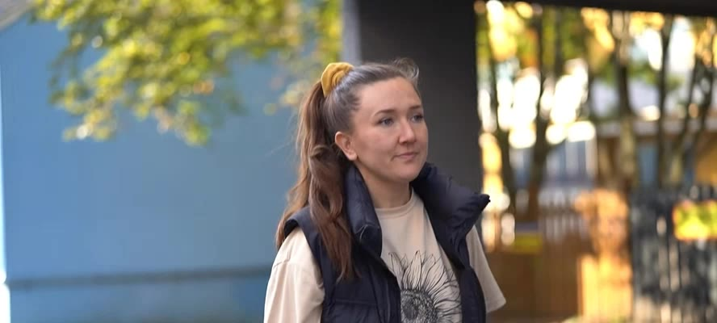
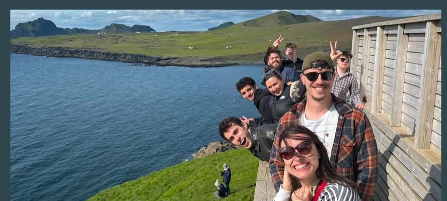

도착
계획보다 먼저 순종으로
칼리는 자원봉사자로 아이슬란드에 왔습니다. 구체적인 계획을 세우고 온 것은 아니었습니다.
REYKJAVÍK, ICELAND · 64°08′N 21°56′W
고향을 떠나 아이슬란드로 온 재림교회 자원봉사자 칼리. 하나님께서 열어 주신 문으로 들어가, 그곳 사람들과 함께 살며 섬기는 이야기입니다.
영상 속 이야기를 간추렸습니다
칼리는 자원봉사자로 아이슬란드에 왔습니다. 구체적인 계획을 세우고 온 것은 아니었습니다.

이곳 가정들과 함께 지내며 삶 속에서 필요한 일을 찾아 돕습니다. 양 농장을 하는 교회 가정에서는 양을 한 마리씩 우리로 모는 일도 합니다.

시간이 흐르면서 칼리의 사역은 청소년과 청년들에게 집중되었고, 사람들이 서로 만나는 자리가 생겼습니다.
무엇과도 바꾸고 싶지 않아요.
칼리 · 재림교회 자원봉사자
멀리 떨어져 사는 일은 쉽지 않습니다. 아이슬란드의 교회와 젊은이들, 그리고 그곳에서 섬기는 봉사자들을 위해 기도해 주세요.
자원봉사자로 섬기는 일에 대해 더 알아보시려면 vividfaith.com을 방문해 주세요.